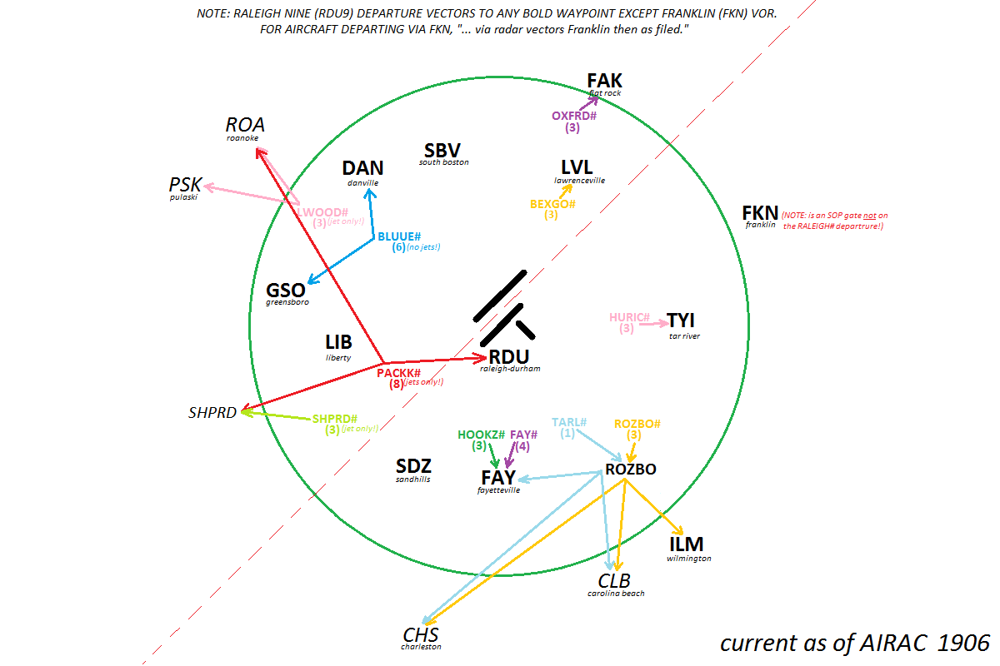

RALEIGH DEPARTURE GATES

RALEIGH INITIAL ALTITUDES
IFR jets:
6,000
(
NOTE:
SOP says 7,000, but departures have all been updated to 6,000 since it was last revised.
)
IFR props:
4,000
VFR:
2,500
(
NOTE:
SOP does not specify, but, this seems to be adequate given MEFs surrounding the Charlie.
)